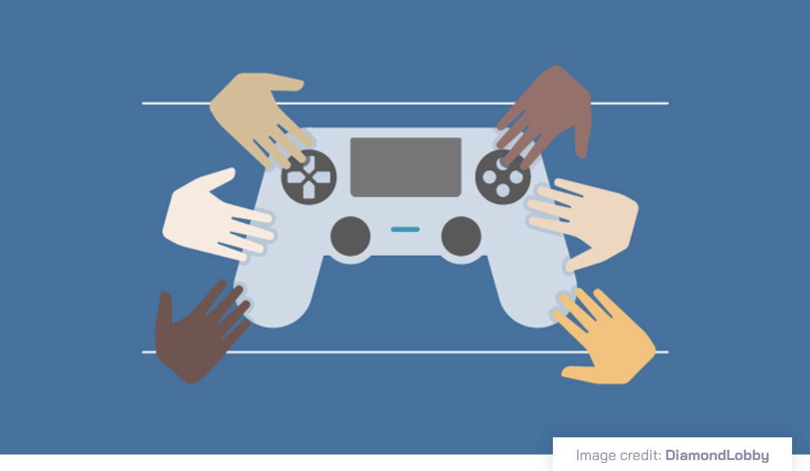
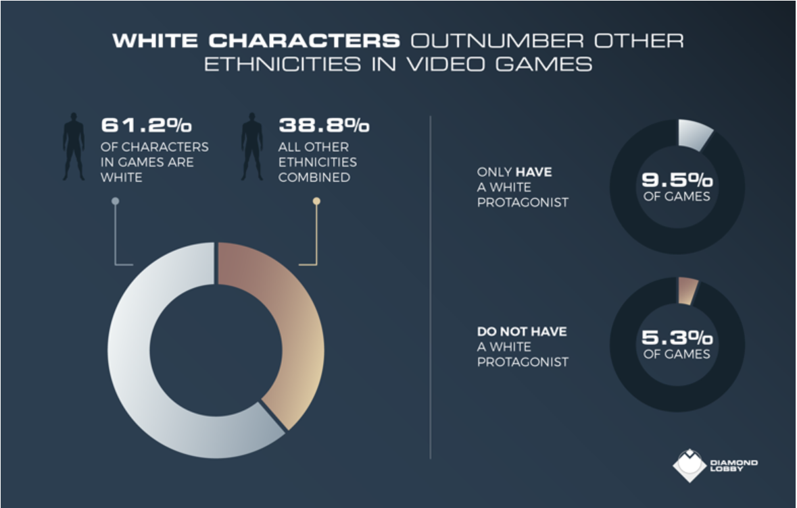

Representation in Video Games for People of Color
By Christina Friesen
Image credit: Diamond Lobby
Video games are a multi-billion-dollar, global industry played by people of varying nationalities, races, backgrounds, and languages. According to a Pew Research Center study, there is a similar amount of gaming self-reported among white, Black, and Hispanic Americans [2]. However, such diversity of players has not been historically represented within the games themselves [4]. In a 2021 survey of the 93 most popular games released in the preceding five years, over 60% of the characters were white, with all other racial groups making up less than 40% [8]. Additionally, there were almost 10% of games featuring only playable white characters , with no non-white representation at all [8]. This sharply underscores the wide disparity between video game players and the racial representation within video games themselves.
As with all mediums of popular entertainment, the evolution of video games has included changes in the ways Black, Indigenous, and People of Color (BIPOC) are represented. Not only does misrepresentation or lack of representation of People of Color (POC) within video games exclude a significant portion of the gaming community, but it also perpetuates negative perceptions of such groups, furthering negative attitudes against BIPOC groups, dehumanizing them and promoting discrimination.

Image credit: Diamond Lobby
Common BIPOC Representation Issues
- Lack of diverse racial representation within avatar or character options, including options for skin tone, hair types and styles, clothing options, and proper lighting for brown and black skin tones that allow for such characters to be seen clearly [10].
- Damaging, stereotypical portrayals of entire racial or ethnic groups, such as Latinx gang members and drug dealers, hypersexualized and submissive Asian women, or Muslim terrorists [4].
- Cultural appropriation of all types, including misuse of traditional or religious symbols, clothing, tattoos, hairstyles, and icons from underrepresented groups [3].
- Inaccurate presentations of cultures or geographic areas, including Pakistanis speaking Arabic, instead of Urdu and English, or Middle Eastern cities all shown as dilapidated deserts, rather than modern and vibrant, as many actually are [7].
- “Other”-ism or the regular portrayal of non-white characters as antagonists, faceless masses to be attacked or killed, or simply secondary/supporting characters that are one-dimensional and expendable [4].
- Whiteness as the default setting and virtuous, with darkness equating to evil, alien, or villainous [6].
Whether it’s overtly racist portrayals of entire ethnic groups as violent criminals or the microaggressions of gamers not being able to create self-representative characters, all such representation issues create problematic gaming environments [4]. These issues are particularly damaging when they appear in AAA, massive, blockbuster games, that further promote such negative stereotypes through their popularity and widespread usage.
Further, continued and recurrent underrepresentation of POC within the video gaming community denotes undervaluing of POC gamers both in the virtual world and the real world, creating increased distance between the games and the players they rely upon [6]. Although some game developers may cite ongoing game popularity as evidence of POC representation being a non-issue, there is increasingly loud demand for improved diversity within the gaming community and these voices will only get louder.
Representation Improvements in the Industry
Given the enormity of the gaming industry, changes to such prevalent issues cannot happen overnight, but increasing awareness and discussion of these problems is necessary for promoting change. While BIPOC representation has certainly improved since the first Black character appeared in a fighting game in 1976, there is still much room for improvement [4]. Developers must acknowledge that religions or races are not monocultures, and a wide array of nationalities, languages, and cultures are encompassed in the broad labels of Asian, Black, Indigenous, Latinx, and Muslim.
Since many of these changes must come from game developers, it is incumbent upon them to increase their awareness of these needs and deliver improvements by conducting thorough research and using contributing voices from the represented communities within the games. Per the International Game Developers Association (IGDA) 2019 worldwide survey, an overwhelming majority (over 80%) of game developers were white [9]. As such, it is unsurprising that this lack of representation is reflected in the games they create. However, more can and should be done to better represent the many racial communities that are represented in the gamers who play these games. In addition to increasing representation within the games, increasing the diversity of game developers will go a long way to improving BIPOC representation as well [6].
Although racial diversity within gaming should be an ethical goal to provide communities of inclusion, safety, and welcome for all gamers, perhaps the most immediate way to get results would be to show game developing executives the financial and business impacts such representation can have for the industry. Looking at the global popularity and significant earnings of such major box office successes as the 2018 Black Panther and Crazy Rich Asians movies, it’s apparent that not only does inclusion result in financial success, but it can also draw in new users who might not otherwise be interested in the gaming world [9].
Similarly, gamers themselves can exercise their influence by demanding representative games that truly reflect themselves in accurate and respectful ways, rather than simple stereotypes or not at all. Given the billions of gamers who immerse themselves in video games each year, the potential for positive influence of increased diversity cannot be understated [9]. Through such efforts, perhaps one day the gaming community will be able to achieve a utopia where diverse representation is so embraced as to be default within the industry and games truly reflect the people who play them.
Resources for Further Reading
- Behm-Morawitz, E. & Ta, D. (2014). Cultivating virtual stereotypes?: The impact of video game play on racial/ethnic stereotypes. Howard Journal of Communications, 25(1), 1-15. https://doi.org/10.1080/10646175.2013.835600
- Fussell, S. (2017, January 29). Video games without people of color are not “neutral.” BoingBoing. https://boingboing.net/2015/06/26/race-video-games-witcher-3.html
- Gray, K. L. (2012). Deviant bodies, stigmatized identities, and racist acts: Examining the experiences of African-American gamers in Xbox Live. New Review of Hypermedia and Multimedia, 18(4), 261-276. https://doi.org/10.1080/13614568.2012.746740
- Phi, T. T. (2009). Game over: Asian Americans and video game representation. Transformative Works and Cultures, 2(2009). https://doi.org/10.3983/twc.2009.084
- Shiu, A. S. (2006). What yellowface hides: Video games, whiteness, and the American racial order. The Journal of Popular Culture, 39(1), 109-125. https://doi.org/10.1111/j.1540-5931.2006.00206.x
- Williams, D., Martins, N., Consalvo, M, & Ivory, J. D. (2009). The virtual census: Representations of gender, race and age in video games. New Media & Society, 11(5), 815-834. https://doi.org/10.1177/1461444809105354
APA References
- Arm Limited. (2022). Glossary – AAA Games. https://www.arm.com/glossary/aaa-games
- Brown, A. (2017, September 11). Younger men play video games, but so do a diverse group of other Americans. Pew Research Center. https://www.pewresearch.org/fact-tank/2017/09/11/younger-men-play-video-games-but-so-do-a-diverse-group-of-other-americans/
- Deguara, B. (2020, December 18). “It’s definitely appropriation”: Use of tā moko in Cyberpunk 2077 video game. Stuff. https://www.stuff.co.nz/pou-tiaki/123715517/its-definitely-appropriation-use-of-t-moko-in-cyberpunk-2077-video-game
- Dornieden, N. (2020, December 22). Leveling up representation: Depictions of people of color in video games. Independent Lens in Lifestyle. PBS. https://www.pbs.org/independentlens/blog/leveling-up-representation-depictions-of-people-of-color-in-video-games/
- Flores, N. (2018, October 31). What other games can learn from the racism in “Life is Strange 2.” Paste Magazine. https://www.pastemagazine.com/games/life-is-strange-2/what-other-games-can-learn-from-the-racism-in-life/
- Harris-Lowe, B. (2017). Gatekeeping: Women, people of color, and the video game community. Senior Theses. 163. https://scholarcommons.sc.edu/senior_theses/163
- Lee, N. (2016, March 24). Shooting the Arabs: How video games perpetuate Muslim stereotypes. Engadget. https://www.engadget.com/2016-03-24-shooting-the-arabs-how-video-games-perpetuate-muslim-stereotype.html
- Lin, B. (2021, September 17). Diversity in gaming report: An analysis of diversity in video game characters. Diamond Lobby. https://diamondlobby.com/geeky-stuff/diversity-in-gaming/
- Peckham, E. (2020, June 21). Confronting racial bias in video games. Tech Crunch. https://www.them.us/story/tell-me-why-video-game-trans-character
- Rousseau, J. (2019, September 11). Dear video game character creators: You still need work. Medium. https://jrous001.medium.com/dear-video-games-character-creators-you-still-need-work-1ac27ffa2820